Jorge Daniel Aguilar García
Carnét: 3590-23-5606
Proyecto académico · Electrónica Digital
Universidad Mariano Gálvez de Guatemala
Ingeniería en Sistemas de la Información y Ciencias de la Computación
Electrónica Digital
Ing. Jorge Luis Salguero Galicia
Conocer el proyecto ↘Equipo de trabajo
Carnét: 3590-23-5606
Carnét: 3590-18-11382
Carnét: 3590-24-6059
Contexto
Frutos de Guatemala, ubicada en Zacapa, necesita mejorar el control de su invernadero ante las altas temperaturas, la baja humedad relativa y los periodos de escasez hídrica.
La gestión manual puede dificultar el control de las condiciones ambientales, el uso eficiente del agua y la respuesta ante posibles fallas o accesos no autorizados.
Propósito
Diseñar e implementar un sistema embebido basado en ESP32 que integre monitoreo ambiental, riego, ventilación, iluminación, evaluación del suelo y control de acceso, con operación autónoma y remota.
Medir temperatura, humedad, iluminación y calidad del aire.
Medir humedad, pH, conductividad eléctrica y niveles de NPK.
Controlar el riego, la ventilación y la iluminación.
Incorporar control de acceso biométrico y alarmas.
Permitir el monitoreo y la intervención mediante la plataforma prevista para el proyecto.
03 · Diseño técnico
El ESP32 funciona como unidad central de control e integra los sensores y actuadores del invernadero.
Sonda 7 en 1 para mediciones de humedad, temperatura, pH, conductividad eléctrica y NPK.
Sensores DHT21, BH1750, MQ135 y MQ7 para las mediciones ambientales contempladas.
Control de bomba de agua, ventilador e iluminación LED.
Lector de huellas, chapa electromecánica, sensor de movimiento y alarma.
Consulta de datos y control mediante la plataforma prevista en el diseño.
Medidas de protección y funcionamiento local contempladas en el proyecto.
04 · Recursos
Presentación de los costos electrónicos y de mano de obra en apartados separados.
Detalle 01
| Componente | Cantidad | Precio unitario | Subtotal |
|---|
El detalle se genera desde script.js.
Detalle 02
| Actividad | Horas | Valor/hora | Total |
|---|---|---|---|
| Diseño y planificación | 8 | Q 30 | Q 240 |
| Ensamble y conexiones | 12 | Q 30 | Q 360 |
| Programación del ESP32 | 15 | Q 35 | Q 525 |
| Integración con RainMaker | 8 | Q 35 | Q 280 |
| Pruebas y corrección | 10 | Q 30 | Q 300 |
| Documentación e informe | 8 | Q 25 | Q 200 |
| Ensayos y presentación | 4 | Q 25 | Q 100 |
| Total | 65 | Q 2,005 |
Contingencia reportada: Q 204.00.
Planificación
Prevención
Niveles de riesgo y sus medidas de mitigación.
Visualización
Selecciona una celda para consultar los riesgos de la categoría correspondiente.
Resumen
Detalle
Evidencia visual
Recorrido visual .
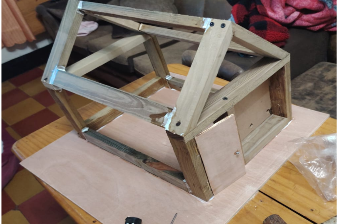
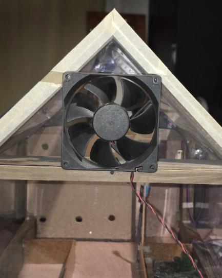
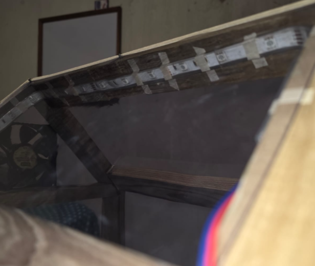
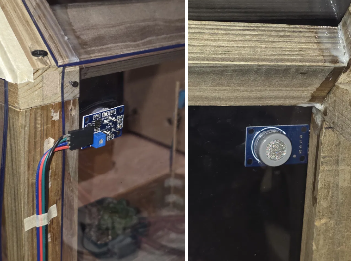
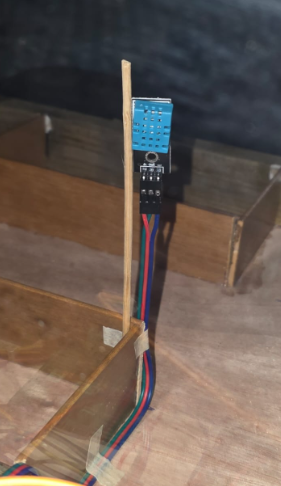
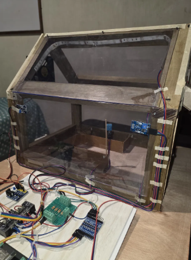
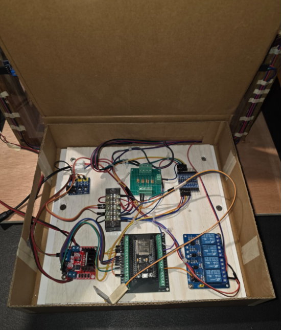
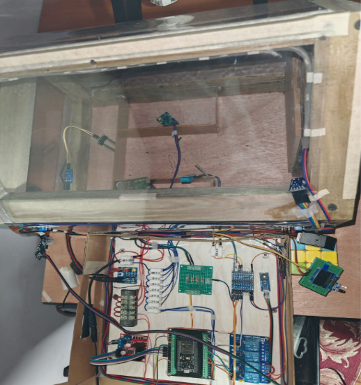
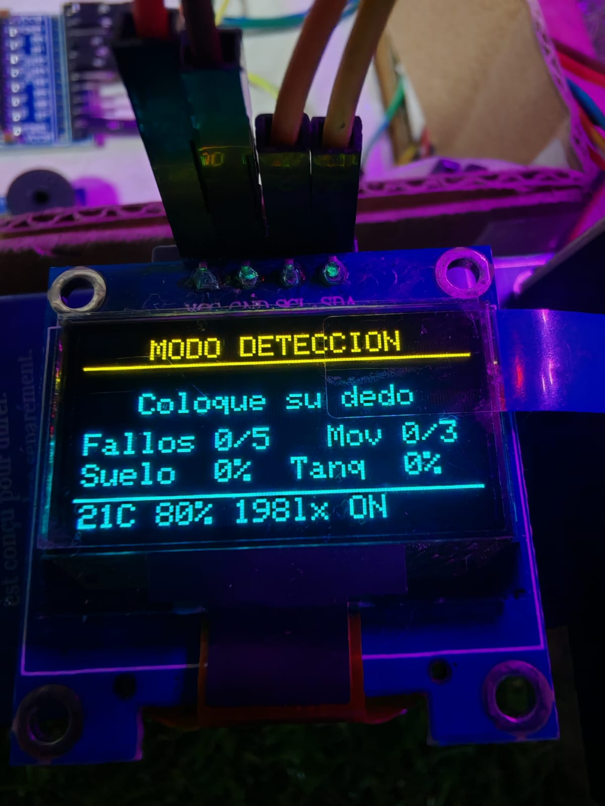
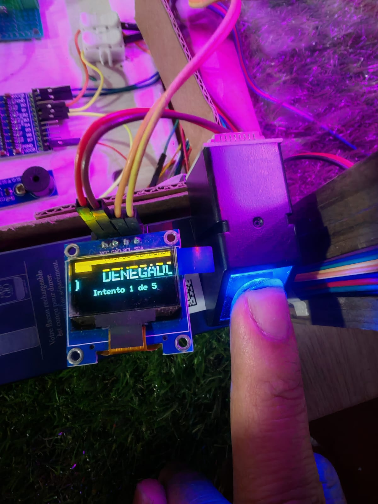
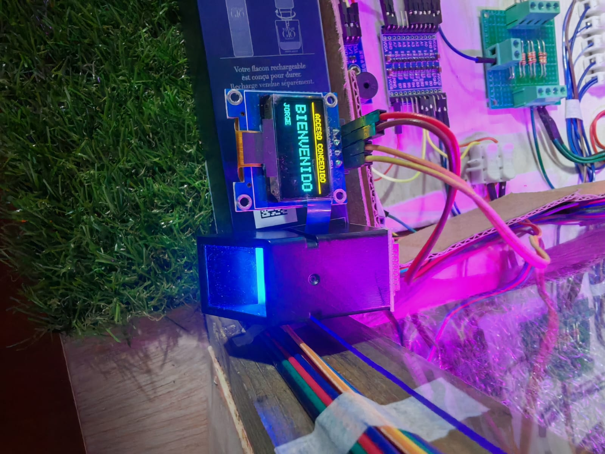
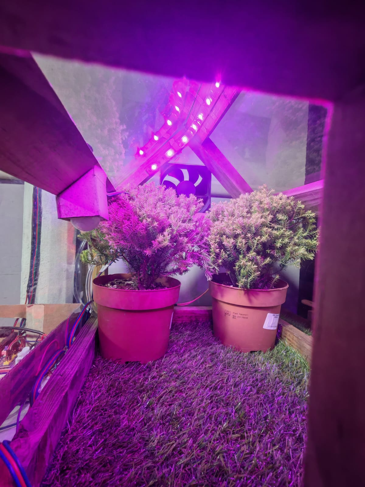
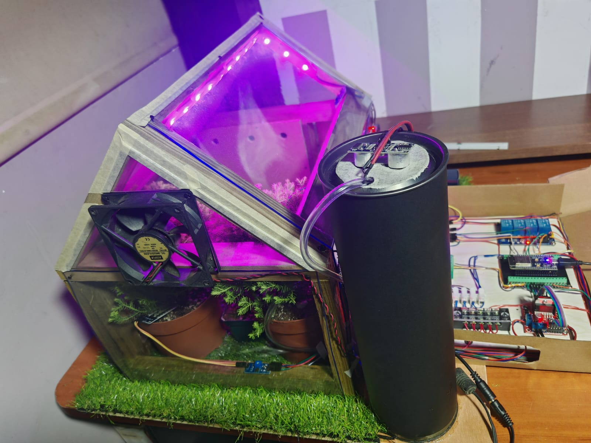
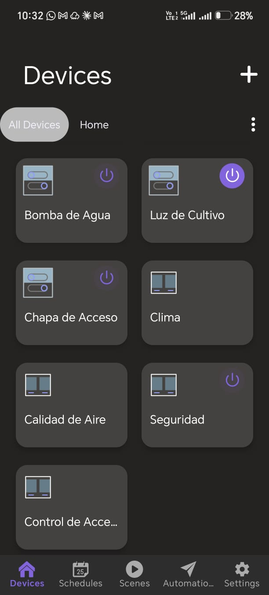
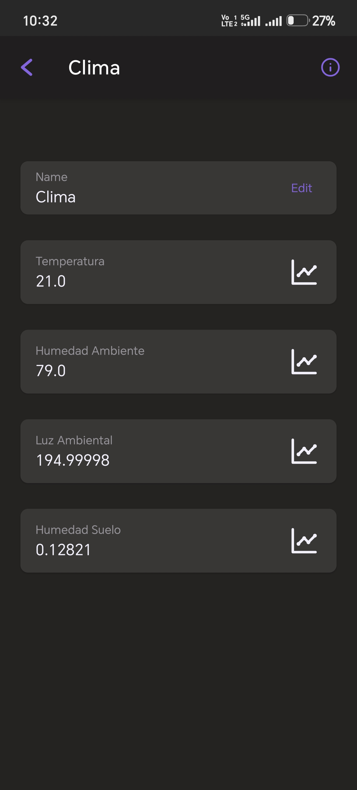
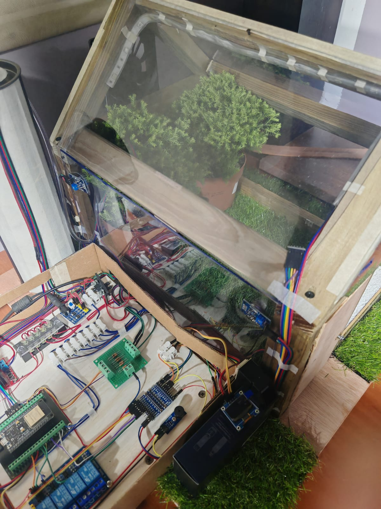
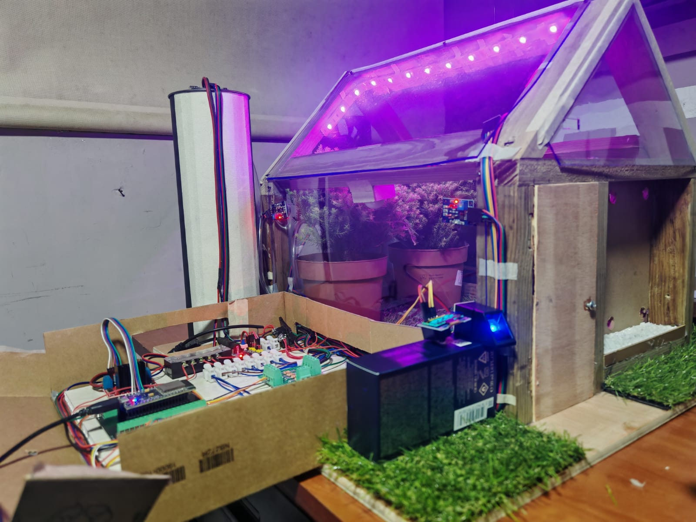
Vista general de la maqueta demostrativa del invernadero automatizado.
Demostración
Videos demostrativos del prototipo.
Cierre
La propuesta integra monitoreo ambiental, evaluación del suelo, actuación automática y seguridad biométrica.
Recomendación: validar los parámetros de funcionamiento antes de su aplicación.El diseño contempla el funcionamiento local ante una pérdida de conexión Wi-Fi.
Recomendación: realizar pruebas de desconexión y recuperación.El proyecto considera medidas de protección eléctrica y control de acceso.
Recomendación: verificar los mecanismos de seguridad durante las pruebas.Referencias